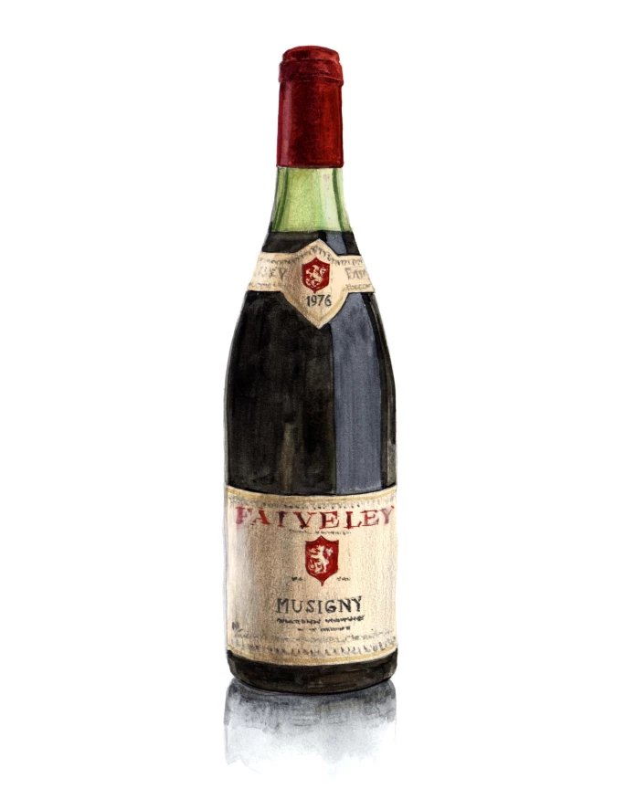
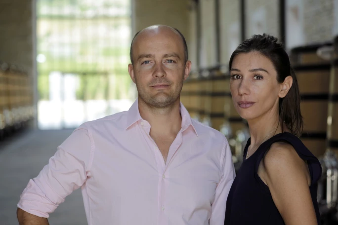
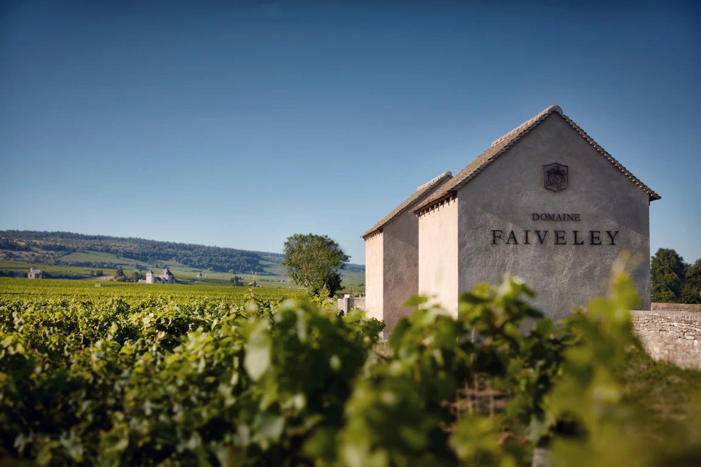
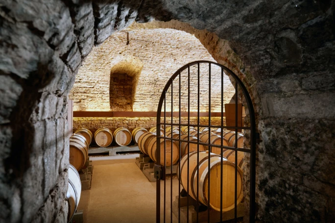

譯自 Nina Caplan · Sotheby's Hong Kong · 2023年10月26日
陳泰銘臻極酒藏的珍酩精選
地區：布艮地夜丘區 | 品種：黑皮諾
FRANÇOIS FAIVELEY 曾說：「如果不從事葡萄酒行業，我可能會成為調香師。」

插畫：Peter Parr、Astor Parr
Faiveley家族有兩個傳統：第一，釀造上乘葡萄酒；第二，尋找機會釀造更多美酒。1825年，Pierre Faiveley以兒子Joseph的名字創辦酒商品牌；Domaine Faiveley則以自家種植的葡萄釀造美酒。第一次世界大戰後，葡萄酒行業陷入低迷，Georges Faiveley協力創立Confrérie des Chevaliers du Tastevin（布艮地品酒騎士會），讓布艮地愛好者歡聚一堂、大快朵頤、把酒高歌。Domaine Faiveley酒莊現任總經理Erwan說他的曾祖父Georges極富遠見，騎士會至今仍是「推廣布艮地和法國的重要渠道」。Erwan的父親François則創辦了一年一度的音樂美酒節，在當地歷史悠久而優雅的建築物裡舉辦音樂會，收益用於支持年輕人的音樂教育。Faiveley家族事業現今傳承到第七代，由Erwan和Eve兩兄妹（還有一個兄弟）掌舵，但他們並沒有因這份豐厚的遺產而自滿。步入酒莊，一條陰涼清爽的路通向一座宏偉的庭院，後面就是一片片葡萄園。庭院中央有一座頗為人熟悉、真人比例的青銅雕塑—偉大雕塑家羅丹的《吻》。2021年，Faiveley家族為了向曾是奧古斯特·羅丹（Auguste Rodin）贊助人的曾叔伯Maurice Fenaille致意，購藏了《吻》的其中一個版本（現存11個版本）。
這一代的Faiveley家族成員不但投資藝術，還致力確保業務與時俱進。除了釀酒生意外，Faiveley家族還擁有一家為鐵路業製造設備的公司，這就能解釋他們的新酒莊建築為何如此寬敞大氣，宏偉得猶如19世紀的法國火車站。

Erwan 與 Eve 兩兄妹，Faiveley 家族第七代成員。相片提供：Serge Chapuis, Mark Volk
除了資金充足，Erwan亦擅於看準時機，購入以稀缺著稱的布艮地土地。他收購了Domaine Monnot，將包括Bienvenues-Bâtard-Montrachet和Bâtard-Montrachet在內的Puligny-Montrachet特級園納入家族囊中。如今，Faiveley家族擁有12公頃特級園和27公頃一級園，其中包括三個獨佔園，分別是Gevrey-Chambertin一級園Clos des Issarts、Beaune一級園Clos de l'Ecu和Corton Clos des Cortons Faiveley特級園，後者更是唯一屬於現存家族的特級園。
Faiveley家族在各園區所佔的土地平均面積為1公頃，對於一個以土地狹小而聞名的地區來說，他們所佔的面積異常龐大。葡萄酒作家 Gerald Asher 曾經寫道，波爾多行等級制度，而布艮地行民主制度，對於這個土地分散而充滿不同風土特色的地區，這樣的形容確實非常貼切。

Domaine Faiveley 酒莊 Cabottes Clos Vougeot。相片提供：Serge Chapuis, Mark Volk
Erwan任內至今最大功績，可能是購買了佔地0.1公頃的Musigny園地。Faiveley家族自1940年代起就在Mugnier的1.1公頃土地上栽種，加上他們自己的0.03公頃土地，使他們成為僅次於Comte Georges de Vogüé的第二大Musigny生產商，每年產量約5,000瓶。不過好景不常，Jacques-Frédéric Mugnier在1980年代中決定收回葡萄園，Faiveley家族只剩下他們在1930年代購買的一小塊土地，葡萄酒產量銳減至大約150瓶。2015年，Erwan和Eve得以將土地面積增加了四倍多，達到0.14公頃。這個面積聽起來似乎微不足道，但事實並非如此，因為如今Faiveley的Musigny佳釀產量已提升到每年500瓶。Musigny是金丘區（Côte d'Or）其中一個最珍貴的特級園，總面積不到11公頃。由此可見，Faiveley與陳泰銘先生合作而達成的這次收購，與他們購入羅丹雕塑作品一樣令人振奮，甚至有過之而無不及。
Chambolle-Musigny有兩個特級園，一個是Le Musigny，另一個是Bonnes Mares的一大部分。葡萄藤面向東南偏東，座落在鮞粒灰岩的斜坡，土壤往下逐漸變成更堅硬的貢布隆香（Comblanchien）大理石，上面覆蓋著富含紅粘土的石質淤泥。葡萄園俯瞰Clos de Vougeot的圍牆，裡面的主建築正是Georges Faiveley參與創立的布艮地品酒騎士會的總部。按照布艮地的慣例，村名與最負盛名的葡萄園合併，因此根據地理位置，Chambolle名為Chambolle-Musigny，從此與金丘區其中一個最響亮的名字永遠連繫在一起。
對於熟悉Musigny佳釀之人來說，Musigny是一個散發著精緻香氣的名字—那濃郁的果味和精緻的結構既雄渾又優雅，令人驚嘆不已。（François Faiveley曾說：「如果不從事葡萄酒行業，我可能會成為調香師」）。Musigny比Chambertin和Romanée-Conti溫和柔順，但三者並肩齊名，毫不遜色於彼此。陳泰銘表示：「我依然最喜歡布艮地的葡萄酒。在我心目中，Musigny無出其右。」

陳年酒窖。相片提供：Serge Chapuis, Mark Volk
1976年發生了幾件顯著的事：有3,000年歷史的埃及法老拉美西斯二世（Ramses II）木乃伊抵達法國，交由巴黎人類博物館修復；熱浪來襲，7月至9月沒有任何降雨；以及Guy Faiveley將酒莊鑰匙放在辦公桌上，讓當時25歲的兒子François接管酒莊生意。
Guy Faiveley的信任並無錯付，接下來兩代子孫都充分證明他沒有所託非人。縱然Faiveley兄妹獲上天眷顧，得到家族庇蔭，他們卻無因此怠慢，反而盡其所能，將家族生意繼續發揚光大。至於年份方面，當年的炎熱天氣代表產量低，但果香濃郁。1976年的Musigny色澤深邃，丹寧強勁，有濃郁的藍莓和核果香氣。除此以外，入口有微妙的皮革和灌木叢香，結構依然完美。雖然陳年已久，但潛力仍無可限量。如此看來，1976年份Musigny與Faiveley家族的軌跡非常相似，兩者同樣肩負著顯赫的出身、昂然踏向光輝的未來。